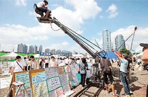

지식형 서비스산업 인프라
- Home
- 전략산업
- 지식형 서비스산업 인프라
개요
아시아 제일의 영화·영상 도시이자 한국의 대표 관광도시, 그리고 세계 1위 조선소가 인접한 특화금융중심지인 부산은 차세대 성장동력이자 외자유치의 기반이 될 지식형 서비스산업 인프라를 집중 육성하고 있습니다.
3년 연속 해외관광객 2 백만명(medical asis 2013, ＇12년기준),
MICE 행사 개최 수 전국 1위(한국관광공사, ＇11년 기준),
의료관광 선도 부문 전국 1위(medical asis 2013, ＇12년기준),
3년 연속 파생상품 거래량 세계 1위(한국거래소, ＇11~＇12)

육성산업
해양·파생특화금융과 영화·영상제작의 메카
선박·특화금융중심지 조성
- 부산국제금융센터 복합개발 2단계사업 추진('14년~'17년) : 연면적 18만2천㎡, 지상 36층 · 49층(2개동), 업무시설(오피스텔 등), 숙박시설(호텔), 판매시설
- 글로벌 금융인력 양성: 국제금융연수원 운영, 금융전문대학원 설립 추진
영화·영상인프라 구축
- 글로벌 종합촬영소 조성('13년~'17년): 달음산 일원 77만6천㎡
- 아시아영화학교 설립: 영화촬영스튜디오 증축(지상 3층~4층), 1,700㎡('15년 8월)
- 센텀시티 내 영상산업센터 설립('10년~'16년) 부산영화체험박물관 건립('08년~'16년)
- 1,000억 원 규모의 영화 기획 · 개발 · 제작 지원펀드 운영
- 영화(드라마) 제작진 숙소 지원, 영화 기획개발 지원 및 제작 · 촬영 지원, 영상벤처센터 운영
활기를 불어넣은 문화콘텐츠 산업 도약
문화콘테츠산업 활성화
- 지역 SW융합 클러스터 구축 및 콘텐츠 융합 R&D센터 설립('14년~'18년)
- 부산콘텐츠코리아 랩 지원 (ICT융합형 창업·창작)
- 모바일 게임센터 개소('15년)
- 문화콘텐츠 스타프로젝트 발굴지원
관광·컨벤션도시 부산의 위상 제고
크루즈 해양관광 및 의료관광 활성화
- 국제크루즈선 부산 공동모항 유치, 부산 국제크루즈 박람회 개최('15년)
- 연안 크루즈관광 상품 개발·운영: 용호만 유람선 운항('14년10월부터, 3척)
- 해외 의료관광 관계자 초청 팸투어, 의료관광 통역자원봉사자 운영(14개 언어권, 370명)
- 체류형 의료관광 클러스터 구축('14년~'18년)
MICE 산업 선진화
- 벡스코 부대시설 부지개발('13년~'17년) : 전시컨벤션시설, 호텔(숙박)시설 등, 14만㎡(지하 6층/지상 37층)
글로벌 경쟁력을 갖춘 관광인프라 확충
- 동부산관광단지 조성('15년~'17년) : 투자유치(면적대비 60%), 부지조성 준공('15년)
- 해운대 관광리조트('06년~'18년) : 101층 규모
- 부산 그린 레일웨이 조성('14년~'17년) : 동해남부선 폐선(9.8㎞) 산책로, 자전거로 등
- 황령산 전망타워('14년~'17년): 1,000㎡
-

영화 ‘국제시장‘ 촬영
-
 크루즈 해양관광 활성화
크루즈 해양관광 활성화 -
 MICE산업 선진화
MICE산업 선진화